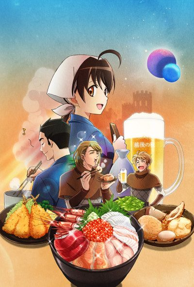
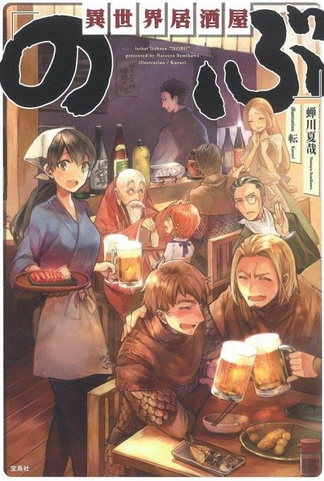

Isekai Izakaya: Japanese Food From Another World
異世界居酒屋～古都アイテーリアの居酒屋のぶ～
A small Japanese pub in Kyoto has a door that opens onto a medieval European city, where its food wins over the locals.
We haven't found where the anime ends in the light novel yet.
7.1AniList score
—Animeter, no votes yet
24episodes
Rate it or report where you stopped
Is it worth pushing through?
Built from what visitors report across all 24 episodes.
Loading reports…Checking what other people said about this one.
Sign in above with your email to add your report.
More like Isekai Izakaya: Japanese Food From Another World
 Unclear8.3
Unclear8.3
 Done7.4
Done7.4
 Manga Ch. 228.7
Manga Ch. 228.7
 Manga Ch. 427.0
Manga Ch. 427.0
 Unclear7.4
Unclear7.4
 Manga Ch. 1078.4
Manga Ch. 1078.4
Manga Vol. 97.8
The Angel Next Door Spoils Me Rotten Done8.1
Done8.1
 Unclear7.9
Unclear7.9
 Manga Vol. 27.8
Manga Vol. 27.8
 Unclear6.7
Unclear6.7
 Manga Ch. 506.7
Manga Ch. 506.7